Celebrating 25 Years of UNESCO-UNEVOC and 10 Years of Tknika as a UNEVOC Centre
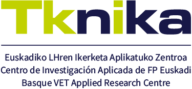
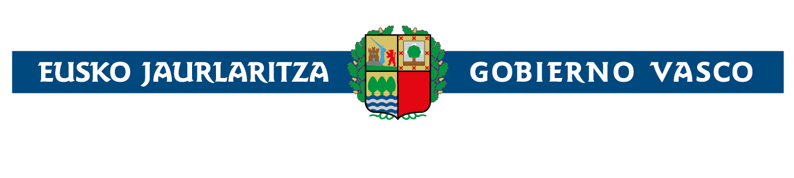
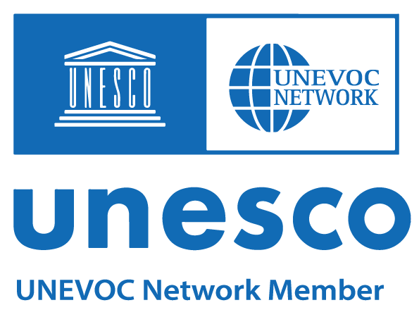
At a glance
Three days in the Basque Country to share how vocational education and training systems around the world are tackling the same challenges in their own places, and to celebrate a joint anniversary.
01 · About the gathering
TVET systems worldwide face the same broad challenges:
Yet these shared categories take very different shapes once they meet a specific place. The categories are global; the solutions being built to address them are irreducibly local, shaped by each region’s economic structure, institutions and history.
TVET is the most local of education systems: delivered in schools rooted in a territory, built around the skills needs of the companies and communities around it.
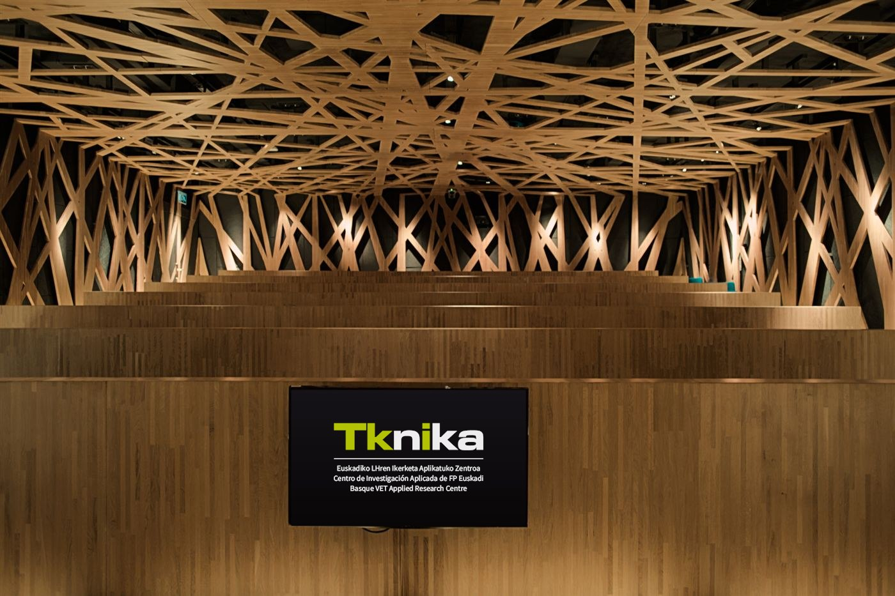
The relevance of TVET at local level is not a side issue: it is the point at which global challenges are turned into opportunities for people.
“Implementation will always be local, but the learning does not have to be.”
02 · Purposes and audiences
Global connection, and the deliberate sharing of knowledge, practice and experience across contexts, is not a nicety but a necessity. The gathering has three purposes:
Surface concrete local solutions and practices that could inform or inspire adaptation in other contexts.
Identify opportunities for joint projects and knowledge exchange, as a counterweight to working in isolation.
Mark 25 years of UNESCO-UNEVOC and 10 years of Tknika in the UNEVOC Network.
A policy dialogue, study visits and the conference itself.
Two one-week training programmes, at EQF levels 3–4 and 5–6.
Dedicated workshops and study visit programmes.
03 · Programme
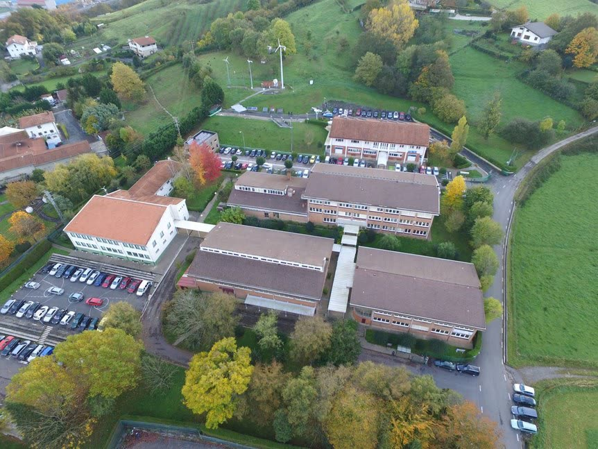
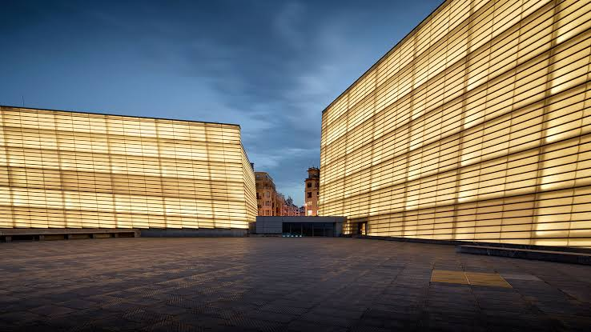
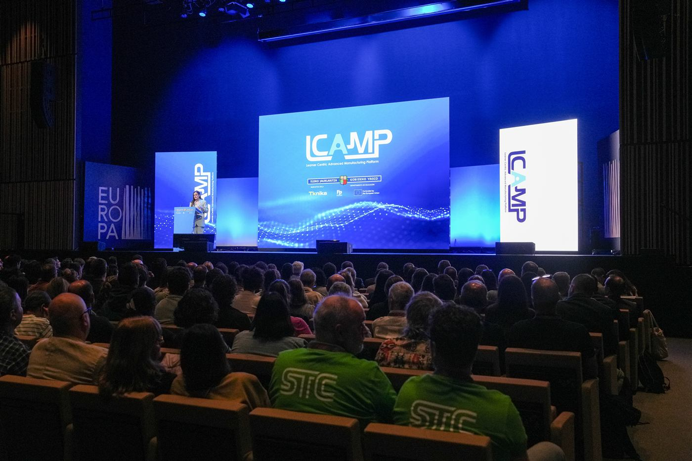
Before the gathering
Two parallel one-week programmes on advanced manufacturing for TVET students from several countries, in April.
04 · Speakers
Conference
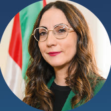
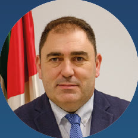
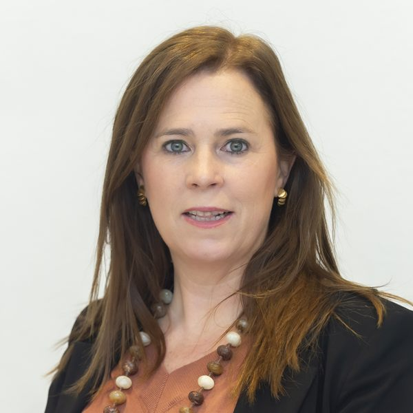
Panel and moderation
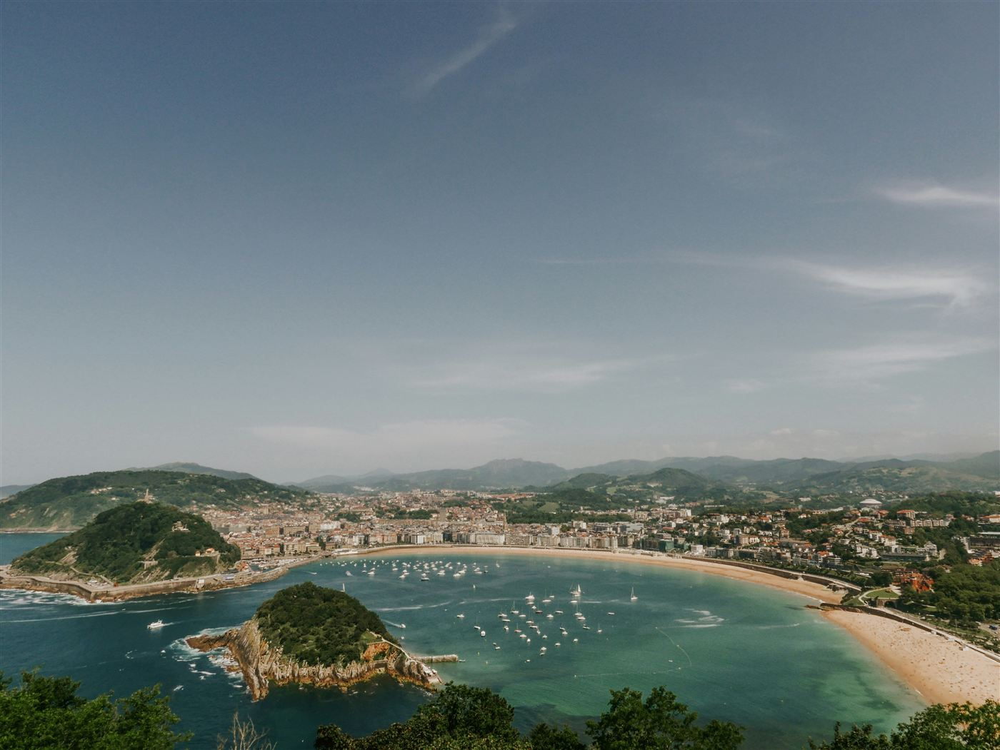
05 · Media contact
For interviews, photos or more information:
international@tknika.eus
Programme and speakers on the event website, with the organisers’ logos to download in the press area.
tknika.github.io/basqueunevocweek